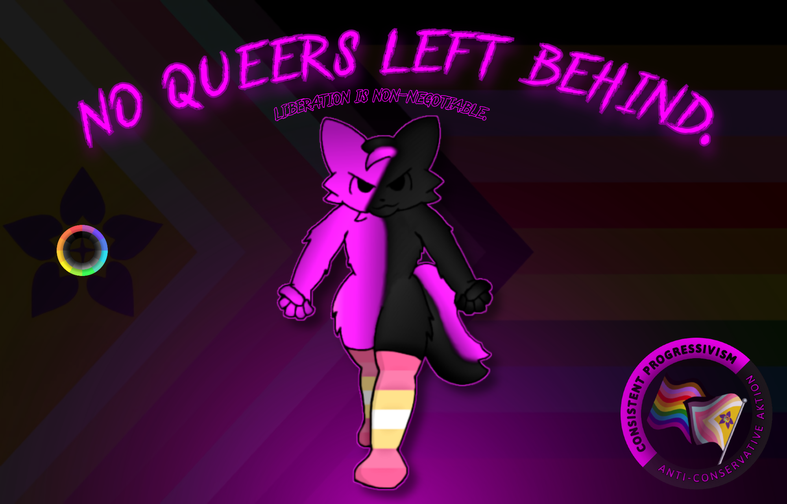

Consistent Progressivism is a political worldview/ideology advocating the complete and total abolition of all forms of conservatism, in favor of a consistent queer decentralized society in which conservatism is nonexistent, allowing for all beings to flourish in hedonist/libertine pleasure through freedom of identity, identifying in any way they please and forming Voluntary Social Relations with whomever they desire, while living free from persecution & stigmatization over their identity.
Consistent Progressives vehemently reject all forms of conservatism, analyzing conservatism as one of two all-encapsulating worldviews (the other worldview being progressivism) existing in a binary, with the worldview being ever more destructive & genocidal the more consistently it is practiced.
Consistent Progressives promote and defend the right to freedom of identity- this is the right of all beings to a TransID, to openly express and affirm it in any way one desires, and to have it respected as their intrinsic selves. Every individual has the right to identify in any way, shape, or form they want, as well as to modify themselves in any way they want to affirm their identity. No individual should ever have any restrictions whatsoever placed upon them because of an identity characteristic (i.e., race, gender identity, sexuality/romantic orientation, age, mentality etc), nor be inhibited in any way, shape, or form from expressing their identity, nor have any identity characteristics assigned to them at birth, as all beings from the moment they exist have the right to complete and total unilateral control over their own identity, whether they use it to identify in the way they feel is natural for their being, or to change it into something they feel better suits them.
(This necessitates the abolition of any & all restrictions to any being delineated by an identity characteristic, thus bringing about LGBTQIA+ liberation, BIPOC liberation, radqueer liberation, gender abolition, liberation of TransIDs, the freedom to as well as destigmatization of public nudity, the abolition of corporations, & the abolition of all states/governments, among many other concepts.)
From the right to freedom of identity can be derived a fundamental right to bodily autonomy, which is the right to complete and total unilateral control over what is to go into one's own body and how one's own body is to be modified in any way, shape, or form, if at all. Central to this right is the freedom to create and/or join VSRs (Voluntary Social Relations) with other beings, VSRs being the sole basis permitted for social relations as a whole and allowing beings within them to freely interact with each other, so long as none assert themselves as an authority or ruler over anyone else in the relation and all remain in said relation only as long as they find it to suit their desires. This right through the VSR model defends personally-applied concepts (such as free abortions, free alcohol/drug usage, prosthetic modifications, etc) so long as all are undergone exclusively by those desiring it done to themselves; no individual should ever be forcefully inhibited from taking any action upon their own body, nor should any action be taken upon their own body by another that all involved have not explicitly agreed to through VSRs.
(This necessitates youth liberation, neurodivergent liberation, animal liberation, and the abolition of the family institution, among many other concepts.)
All beings have a right to free love; this is the logical extension of the rights to freedom of identity and bodily autonomy, as all individuals have the right to freely and openly express their romantic and sexual orientation, and engage in any romantic or sexual activity with any other beings they want, so long as it is done through the VSR model; no individual should ever be inhibited from pursuing a romantic or sexual relation with any beings they wish to through VSRs, nor be stigmatized, shunned, or otherwise persecuted in any way, shape, or form for their choices in doing so, so long as all involved are progressive and have opted-in to the relation through VSRs.
(This necessitates the liberation, destigmatization, and freedom of polyamory, sex work, GRSM liberation, sex positivity, exhibitionism, masturbation, consanguinamory/incest, MAPs/YAPs, AAMs/AAYs, zoosexuality, necrophilia, and all paraphilias, among many other concepts, through the VSR model.)
A political worldview defined by a broad category of ideas either implicitly or explicitly believing that beings should be discriminated against because of their race, gender identity, pronouns, sexual identity, or anything else regarding their identity that does not harm others; that individuals based on some aspect of themselves that they were born with or identify as, or some physical, sexual, or personal pleasure they happen to have can be "lesser" individuals than others whom they would consider "pure", and therefore that these "subhumans" should be persecuted due to their identity being viewed as "lower" than the identity of someone else a given conservative views as "pure".
Synonymous with "bigotry", "prejudice", & "discrimination".
A political worldview defined by the negation, rejection, & opposition to conservatism; an acknowledgement that no identity turns one into a "subhuman", & an advocacy of what would follow from the nonexistence of conservatism: statelessness, egalitarianism, decentralization, freedom of identity, free love, & an established solidarity where all races, gender identities, sexualities, ages, mentalities, & general beings are viewed as equals & held to the same standard of non-hierarchical organization, anti-discrimination, & respect of identity.
Synonymous with "social justice", "intersectionality", & "radqueer".
A political organizational structure defined by the abolition of all forms of rulership & hierarchical power structures, most predominant among them being the state/government, which maintains a monopoly over the defense apparatus. To replace state functions, bottom-up methods of organization are put in place as opposed to the statist top-down/centralized ones, in essence creating a "rule without rulers", "order without hierarchy", "governance without government", & "organization without centralization". Rather than there being a central control over defense, government of any kind ceases to exist at all, allowing defense to be left to the sole control of progressives in VSRs, who now, rather than being locked to only one method of force/violence (the state), now have access to a vast variety of different means of defense/violence (i.e., localized militias, mutual defense, community VSRs, etc), which they can spontaneously swap between at any moment, ensuring all possible forces to eradicate conservatism are available.
Synonymous with "statelessness", "horizontalism", & "anarchism".
Any identity a being may hold in deviation from those assigned at birth to them by conservative society. The most common among them is transgender, but TransIDs expand to include any aspect of ones identity that deviates from the one society has applied to them. TransIDs include, but are not limited to: transgender, transage, trace, transabled, transbody, transpecies.
More can be learned about TransIDs here.
Any sexuality/attraction/'philia' bearing the unique empirical status of extensive (relative to most other sexualities) persecution & stigmatization within conservative society; para sexualities are identifiable by their artificial (gained by conservatives) non-normative/atypical reception within society. Para sexualities include, but are not limited to: intra/chronophilias (M/YAPs & AAM/Ys), zoophilia, necrophilia, consanguinamory/incest, objectophilia/objectum.
More can be learned about different paraphilias here.
A progressive social relation structure that any non-conservative who is not a BWUI can join, requiring that every single being involved has chosen to opt-in to it solely of their own volitional pleasure desire, remains there only as long as they find the relation satisfies their desire, & is free to exit at any point without any restrictions or barriers to doing so. Short for "Voluntary Social Relation", VSRs would be the universal all-encapsulating model for relations in progressivism, taking the place of all social interactions as a whole but especially the coercive ones existing under conservatism, including but not limited to: the family institution, marriage, education, production.
Any individual entirely incapable of communcation* of any kind (both speech and movement), placing them in a position where they are essentially "Beings With Unobservable Intent" (as they can't speak in any way, nor can they move, thus leaving them with no means of making other beings aware of their desires). Other than conservatives, BWUIs are the only beings incapable of joining VSRs, though this is not because of some ageist or ableist "subhuman" factor like what is present in conservatism; quite the contrary actually, as BWUIs are viewed & treated equally to everyone else. There's nothing external stopping them from joining VSRs at all; the only reason they're incapable of joining is because due to not being able to communicate, it would be impossible to know whether a BWUI is opting-in to join a VSR or not (having any way of knowing this would mean they can communicate, and thus would no longer be considered a BWUI), & as such it would be assumed that they aren't until they indicate otherwise, thus negating the BWUI condition. It is possible for any being to transition in and out of being a BWUI at any point, though remaining a BWUI is a very short-lived and temporary experience.
*("Communication" here is used in a very broad sense, defined as anything an individual can do to make another individual aware of something the first individual would like to express. Communication is not limited to speech, though speech is the most common form of communication, & communication can also take the form of things such as writing, hand signals, body language, or braille. It is for this reason that movement is relevant, as being able to move can be fell-back on if speech is not available to a given being as a form of communication. It is both not being able to speak and not being able to move in any way that renders someone to be a BWUI, not merely being non-verbal.)
A centralized & hierarchical structure of organization characterized by the monopolization of power & authority within a given region, with this authority being used to control the military, police, court, & general defense apparatus, which is used to close off other means of defense, locking in the government forces as the only available means of defense among the populace, & using this exclusionary advantage to enforce its arbitrary rule onto the populace via "legislation" & often coerced extraction of resources from the population to sustain itself. It is a form of conservatism, due to its centralized structure & monopolization of defense, rendering all outside the government to be reduced to a "subhuman", while also amplifying all other forms of conservatism, as the government is the baseline conservatism from which the others are forced onto society & incentivized to become ever more consistent. Also called a "state".
Synonymous with "hierarchy", "rulership", & "centralism".
A stance on praxis discouraging, impeding, prohibiting, or otherwise hindering the use and/or extent of one's own and/or one's allies use of violence/force.
Fundamentally fluctuating & subjective, determined by observation of the time & context of the topic in question, with said topic able to be seperated from the aforementioned attached concept in question at any moment due to this, whatever said concept/topic may be.
Fundamentally & permanently static, objective, & inherent to the mentioned concept in question regardless of context, time, or other variables; unable to be seperated or unlinked from the given concept/topic for whatever the reason may be.
A societal institution formed when two individuals reproduce, one of them gives birth to offspring, & said offspring is then involuntarily forced into a social institution at the instant that they exist where they will be subject to the hierarchical ruling granted within such an institution to one or more individuals, usually though not always delineated by genetic code, that are considered to be the ruling authorities, known as "parents". The individual offspring, upon being forced into the institution, is then, whether they like it or not, forced to obey the every whim of the ruling authorities, lest they face persecution* by the state. Ruling authorities (whether it be several through the "nuclear" or "extended" models, or only one) in the family institution are granted the power to complete and total control over every aspect of the lives, identities, and actions of individuals who never even chose to enter the institution nor are permitted to opt-out, on the basis of their existence time in that they have not existed long enough (as determined arbitrarily by the state) to have basic autonomy.
(Important to note here is that in some instances they'll be persecuted by the state anyway even if they do obey the every whim of the ruling authorities under the condition that the ruling authorities go against the higher ruling of the state, during which the persecution may consist of being forced to a shelter where they will await a new "parent" in the process known as "adoption".)

Not. A. Single. One.
For far too long, LGBTQIA+ movements have had to put up with the infiltration of such conservative appeasers and compromisers, taking over the supermajority of spaces and turning them to conservatism, a process in which many identities that have since the beginning been a foundational part of the backbone of queer movements (both during and even way before Stonewall, going further back than the consistent conservative genocide of queers under the pink triangle as well as pederasty movements) have since been thrown under the bus and abandoned, left to suffer in near-total isolation, with any hope of finding fellow queership becoming but a mere dimming flicker in a world where modern 'queer' movements are in disarray, pink-paint conservatives have effectively taken over nearly all large queer voices, and those holding whichever arbitrary identity has been deemed by conservatives as 'degen of the day' are cast aside, thrown into suicidal ideations alongside external persecution through genocide via conservative omnipresence, both individually and institutionally.
This is the result of what decades of abandonment of fellow queers by other queers has led to; compromise, pacifism, and corner-cutting of queer identities has helped conservatism foster a society where what was once a unified movement of queers from across all identities defending each other's backs in the face of conservatism has become a disjointed desolate mess of beings of different identities in a perpetual in-fought war against each other, with pointless arbitrary 'rules' put all over the place about who is allowed to be what identities at what time under what circumstances with what resources and why, with many identities not abiding by conservative normativity standards actively erased from public space.
Pink-paint conservatism pioneered by antis, endophobes, TERFs, ableists, eugenicists, truscum, & fakeclaimers allows for a society where gender identities & sexualities are denied resources & expression, actively being genocided out of public space, those under conservative existence time criterias for autonomy are reduced to slaves and placed under constant surveillance to ensure that every single action they take falls in-line with the commands of their slave owners, who work in tandem with conservative centralism to ensure they'd have no resources to use and nowhere to go of acceptance even if they were to escape due to the omnipresence of CETCAs/"age limits", disabled & neurodivergent identities are tossed aside- not even seen as worth accounting for within many movements thus leaving them to the eugenicists, alterhuman and non-gender transids (among many other, nearly all identities) are treated as though they're some 'mental defect' in the mind needing to be cured, and those with explicit paraphile identities have their genocide so societally normalized that some conservatives think they're being 'generous' when they offer literal identity conversion therapy as an alternative.
The rise of MAP, TransID, and Radqueer movements was thought to be a breath of fresh air by many queers, breathing new life into the movement by welcoming back many identities previously left behind, as well as placing new light and emphasis on minority identities that many prior movements never even thought to include, fostering a healthy new space for the revitalization of queer movements; however, this too eventually fell apart when conservative appeasers and compromisers took footing in the movement with the introduction of paraphile "contact stances" pushed by a group of individuals with one of the most disdainful names to date, "Non-Offending MAPs"/"NOMAPs". This compromise springboarded towards the disarray of yet another queer movement: identities are thrown back in the dark, with paraphobes reemerging through the form of "anti-contacts", while queers are once again isolated and gaslighted into repeating the conservative appeasement cycle. From GLAAD's betrayal of NAMBLA to the "LGB without the T"s, the cycle remains; continued in a perpetual loop.
The only thing that wins at the end of all of this is conservatism, its victory so engrained that even modern 'queer' movements that don't explicitly exclude anyone by name have adapted to what is essentially the 'silent clause of conservatism'; that "of COURSE we won't let in pedos/zoos/incesters/contraids/non-gender-transids/etc into our space, everybody hates them, that's a common sentiment" viewpoint that has become so societally engrained that mass movements have adapted to conservative exclusionism without even feeling a need to declare that they have, with beings of 'controversial' identities excluded from what was supposed to be "friendly/safe" spaces without any prior specification or warning of any kind that they wouldn't be allowed, because "they aren't allowed anywhere anyway, and we don't want an extra target placed on our head by more consistent conservatives for harboring them", ignorant to the fact that if their space has queers of any kind in it at all, they're already a target of conservatives.
Put short, a history of queer sabotage through compromise and pacifism has caused many-a liberation movement to get their asses kicked brutally by conservatism.
Compromise and pacifism has clearly axiomatically failed for the queer movement, so let's not do that anymore.
We're here, we're queer, we're incredibly pissed off, and we're using a different vision now. A vision rejecting all forms of centralism/transitory statism, pacifism, and compromise. A vision where, rather than pleading for the mercy of individuals following an ideology defined by wanting us dead, leaving our fellow queerships out in the cold of conservatism, fighting each other and weakening our queerships in the process, gatekeeping identity with arbitrary rules, and ultimately becoming conservatives ourselves, we instead came together under a mutual desire to defend each other's identities, embraced each other and celebrated our identity diversity, fight together side-by-side to direct our fury entirely at conservatives, tear the gates down and repurpose the bars into 3D-printed ammunition for the now-flooding-in fellow queers to defend against conservatism with, and stopped leaving queers behind and embraced each other to create a vision of acceptance and expression for every queer. This is the vision of Consistent Progressivism.
Consistent Progressivism is a movement of queers from across all identity spectrums, united towards the complete and total abolition of all forms of conservatism. It is the logical endpoint of all queer movements, bringing together every single identity through an ideology built entirely by queers, for queers. It is the amalgamation of queer rage, built up by all refugee, outcast, isolated, stigmatized, and abandoned identities of non-normativity that have been shunned and left behind by many prior 'queer' movements due to conservative appeasements and compromises.
It is a decentralized movement of queer fury, made of every single queer to be left in the dark, lighting an electrical flame with which queers seek a total scorched-earth liberation where every conservative, conservative ideology, conservative institution, conservative anything is burnt down, allowing at last, for free queer reign, where never again does any queer suffer contempt or persecution on any scale, at any degree, in any capacity, for any aspect of their identity, free to hold and express their identity to the fullest capacity, with the abolition of any and all limits, restrictions, or arbitrary rules placed on what identity can be and be expressed as, as well as the abolition of purity culture & all conservative social norms assigned to beings over identity traits in favor of a society where individuals start & stay as free beings not tethered to any preimposed norms or standards upon their identity. Identity is a blank canvas for the queer sense of self, and with the erasure of segregation, discrimination, and bigotry, we can at last let queers be queers.
From the axiom of freedom of identity can be formed a right to bodily autonomy, where queer self-ownership is held. Every queer owns their body, and through this, holds the absolute unilateral right right to act on their own body in any capacity, shape, or form that they want (drugs, prosthetics, and identity expression being three such examples of liberties queers might opt to take). No being is permitted to act upon another queer's body in any capacity unless said queer expresses explicit desire to opt-in to such action.
Most vital to the right of bodily autonomy is the structure of the VSR (Voluntary Social Relation), which, in progressivism, would be made mandatory for all social interaction of any kind. In VSRs, all beings involved are there from an explicitly held desire to opt-in, all beings involved are free to opt-out at any time without any challenge presented in doing so, all beings remain involved only insofar as they find the relation to be to the absolute benefit of their happiness and desire, and no being is inhibited from entering on the basis of their identity (which means anyone of any age, paraphilia/sexuality, transid, orientation, racial identity, etc can enter without being inhibited due to their identity. In Progressivism, we wouldn't need to specify this, but conservative appeasers co-opt liberation language so much that saying explicitly that we won't allow beings to be kicked out for these things has unfortunately become an empirical necessity to combat the silent clause of conservatism).
No beings are premeditatively excluded from entering VSRs except for conservatives, with the foundations set forth by bodily autonomy laying the groundwork for the third fundamental right of progressivism, this being the right to free love. With the right to free love, queers can purpose VSRs towards the expression of their sexualities/paraphilias and romantic orientations, free to express such to their fullest capacity from the VSR, with any beings in the VSR (in the spirit of, as well as possible literal formation of polyamory & polycules!); no being is inhibited from the complete and absolute expression of their sexuality/paraphilia and romantic orientation.
From the axiomatic right to freedom of identity comes the right to bodily autonomy and the VSR, from which the right to free love is formed. These make up the three fundamental rights of progressivism, which are themselves rooted in the foundation of queer beings. Omnipresent among every step, layer, and piece of every foundation is the placing of queer liberation at the forefront, consisting of a complete and total acceptance of all queer identities, and thus, an omnipresent principle that the only universal exception in regards to who isn't allowed, is conservatives. Consistent Progressivism enforces the complete and total abolition of all forms of conservatism, regardless of institution or flavor.
This means abolishing all forms of gun & armory control/regulation in order to arm all queers to the maximum extent possible, so that queers can decentralize into VSR militias which will enforce such abolition.
This means abolishing the family institution, putting an end to all forms of internal and external enslavement, persecution, and restrictions of queers on the basis of existence time in any capacity, so that all queers of all existence times start and stay as free beings; this is total youth liberation placing all queers of all existence times as equals with the same fundamental three rights of all queers- freedom of identity, bodily autonomy, and free love, alongside the abolition of eugenicism, persecution of incest/consang relations, institutionalized (alongside all forms of) ableism, and institutionalized (alongside all forms of) transphobia.
This means the abolition of the compulsory schooling institution, instead completely overhauling education to take place within VSRs, placing those educated at the forefront (with them having opted-in to attend to begin with of their own desire; no one but them is permitted to make the choice of whether they enter at all and where they do so if they choose to), free to choose their pace, length, structure, and curriculum (with special encouragement and emphasis given to queer, transid, disability, and paraphile studies), self-educate, or opt-out at any time, all of which scaling within a horizontalist bottom-up framework.
This means the abolition of all forms of the state/government/centralism, with all centralized and corporate structures (or at least, the ones that wouldn't be shot into the stratosphere due to existing solely to maintain conservatism; i.e. the IRS, CPS, fiat, etc) being decentralized to queers, giving queer defense (taking the form of bottom-up interconnected local militias, community organizations, and mutual defense pacts made of individual queers joined together in VSRs, able to consist of any) equal access to all societal means of defense, with the queer militias serving exclusively to maintain the nonexistence of conservatism, not allowing for any authority to be expressed onto other queers beyond what would be necessary to make sure there are no conservatives. All queer militias would be strictly decentralized in accordance with VSRs, with no central command points for conservatives to strike at due to the decentralized model, allowing for rapid adjustment to any potential lingering conservatives or conservative attacks, with the decentralization also allowing for the militias to quickly work together and outnumber any who flip and turn conservative, ensuring spontaneity, adaptability, and efficiency due to the nonexistence of centralist planning.
The abolition of the centralized concentration of food, healthcare, and housing would ensure all queers can be fed, all queers can have access to identity-affirming care, and all queers can find a home through VSRs. Borders would likewise be abolished, allowing for queers to freely move anywhere they desire. Queers would have equal access to any and all funds left behind by the corpses of conservatives, free to use such to form their own economic-oriented VSRs (whether it's through XMR or abolishing currency entirely for alternative means of distribution, production, and gift sharing).
Free pornography, unrestricted public nudity, body positivity & liberation, identity diversity, & the repurposing of conservative corpses would be some predicted common sights within progressive culture. What wouldn't be seen in existence, inversely, is nationalism, borders, governments, bigotry, prejudice, eugenicism (this includes so-called race "science", gender binary "science"/gender "biology", brain development "science", TERFs, SWERFs, truscums, sysmeds, & "human nature" "science"), & discrimination (broadly classed "conservatism"). Conservative hunting would a de facto progressive tradition.
Consistent Progressivism is a movement of incredibly pissed off queers unified in seeking total liberation, that this time, leaves no queers behind. No matter how 'yucky' or 'problematic' a given queer identity happens to be perceived, Consistent Progressives fight for all queer identities, putting an end to conservative appeasements throwing queers under the bus (alongside all associated with conservatism as a whole), and welcoming all who aren't conservative. No fine text, no hidden clauses, no bullshit- all means ALL. We fight for every single queer ever to be taken from us by conservatism, the complete and total release of all living queers from centralist solitary confinement, and justice for all genocided, enslaved, and persecuted queers.
Liberation is non-negotiable.